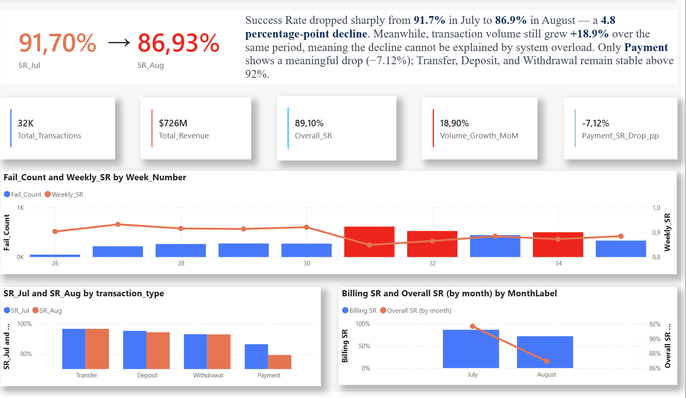
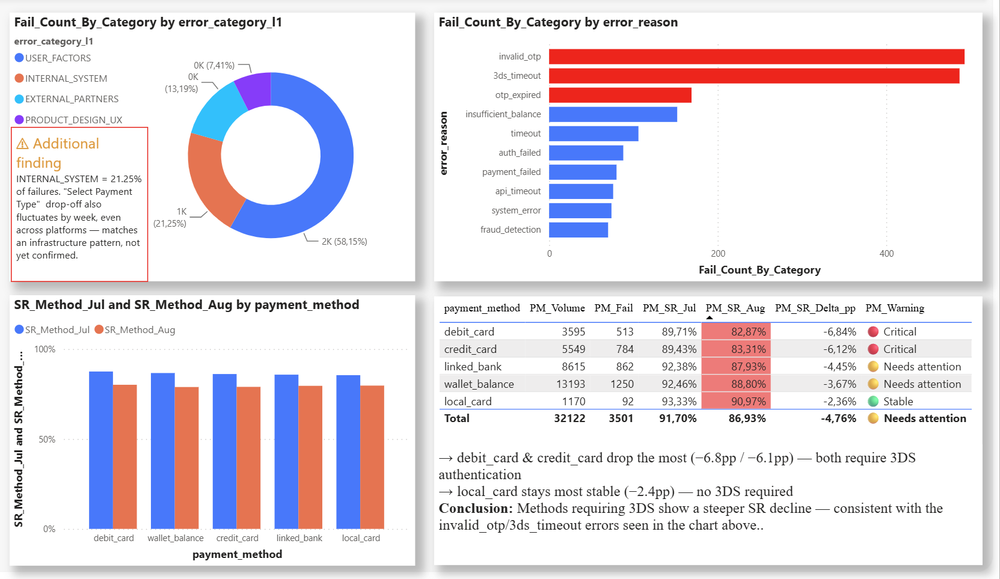

E-wallet Payment Success Rate Analysis
Capstone project · phân tích tỷ lệ giao dịch thành công (SR)
Xây dựng báo cáo Power BI 5 trang (Overview, Funnel & Conversion, Root Cause, Revenue Pareto, Retention & Distribution) trên bộ dữ liệu giao dịch, hành vi người dùng và lỗi hệ thống của một ví điện tử trong 2 tháng, nhằm xác định điểm nghẽn trong luồng thanh toán và truy nguyên nhân gốc bằng mô hình Bowtie.

Trang Overview — Power BI report
- Success Rate giảm từ 91,70% (tháng 7) xuống 86,93% (tháng 8) — giảm 4,8 điểm phần trăm, trong khi volume giao dịch vẫn tăng +18,9%, loại trừ khả năng do quá tải hệ thống.
- 58,15% lỗi thuộc nhóm USER_FACTORS, tập trung ở bước xác thực OTP/3DS — lỗi phổ biến nhất là invalid_otp và 3ds_timeout.
- Billing vừa là category doanh thu lớn nhất (41,91% tổng doanh thu) vừa là category có SR giảm mạnh nhất — rủi ro kép về tài chính và trải nghiệm.

Trang Root Cause — phân loại lỗi 3 cấp